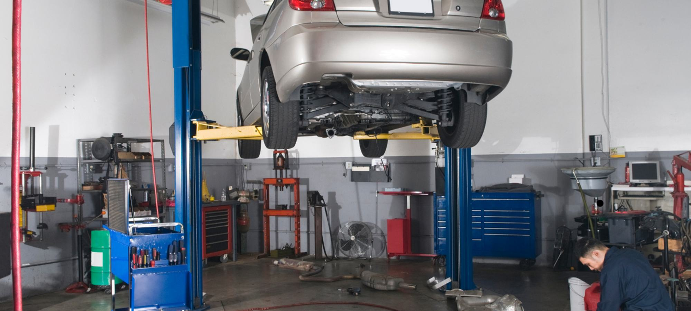

CAP mécanique auto ou CAP mécanique moto, lequel choisir ?
Les deux formations portent le même nom de diplôme, le CAP Maintenance des véhicules, et trois options le déclinent.

CAP maintenance des véhicules option voitures particulières ou option motocycles. Deux diplômes distincts, deux référentiels, deux marchés de l'emploi. Nous comparons les programmes et les partenariats d'atelier.

Les deux formations portent le même nom de diplôme, le CAP Maintenance des véhicules, et trois options le déclinent.


Les deux formations portent le même nom de diplôme, le CAP Maintenance des véhicules, et trois options le déclinent.
Deux écoles à distance, un seul diplôme d'État à la sortie.
Douze écoles de formation à distance passées au crible sur le CAP cuisine, tarifs affichés relevés sur les sites officiels en septembre 2026, volumes horaires annoncés et nombre de devoirs pratiques réellement corrigés par un formateur.
10 organismes de formation à distance comparés sur le seul CAP électricien, programmes publiés en main.
Quatre voies principales mènent au CAP pâtissier après 25 ans, plus trois variantes que peu de candidats connaissent.

Dix écoles préparant le BTS Diététique hors présentiel, tarifs relevés sur les sites officiels en septembre 2026, de 1 590 € à 4 490 € pour les deux années.
Note globale sur 10 sur le seul univers mécanique. L'accès à un atelier partenaire et la clarté du référentiel d'épreuves pèsent le plus lourd, la mécanique ne s'apprend pas uniquement sur écran.
Voir la méthode de notation


Comparez deux organismes sur nos cinq critères en un clic.
Oui, la partie théorique et la préparation aux épreuves se suivent entièrement à distance. La pratique se travaille en stage, en atelier partenaire ou sur son propre véhicule, et l'examen se passe en candidat libre auprès de l'académie.
Ce sont deux options du CAP Maintenance des véhicules, avec des référentiels séparés. L'option voitures particulières couvre les moteurs thermiques et électriques et les systèmes embarqués, l'option motocycles ajoute les deux roues, les transmissions par chaîne et la partie cycle.
Un mécanicien débutant titulaire du CAP se situe autour du SMIC dans un garage de quartier, entre 1 900 € et 2 100 € brut en concession avec les primes d'atelier. Le diagnostic électronique et l'électrique font monter la grille plus vite que la mécanique générale.
Le marché est plus étroit que l'automobile mais moins concurrentiel à l'embauche, avec une forte saisonnalité au printemps. Les concessions et les ateliers spécialisés recrutent surtout des profils capables de faire le diagnostic et la préparation.
Oui pour l'épreuve pratique. Deux organismes du panel proposent des conventions avec des ateliers partenaires, les autres laissent l'élève trouver son stage, ce qui reste le principal point de friction de cette voie.
Un email par semaine, le classement du mois, les nouveaux comparatifs de formations et les sessions qui ouvrent.
Pas de publicité, désinscription en un clic.